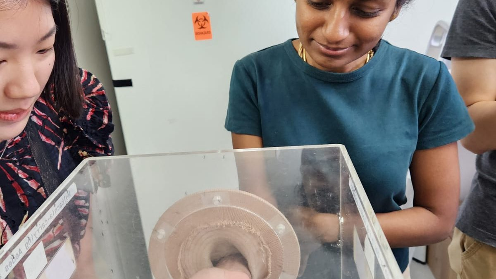
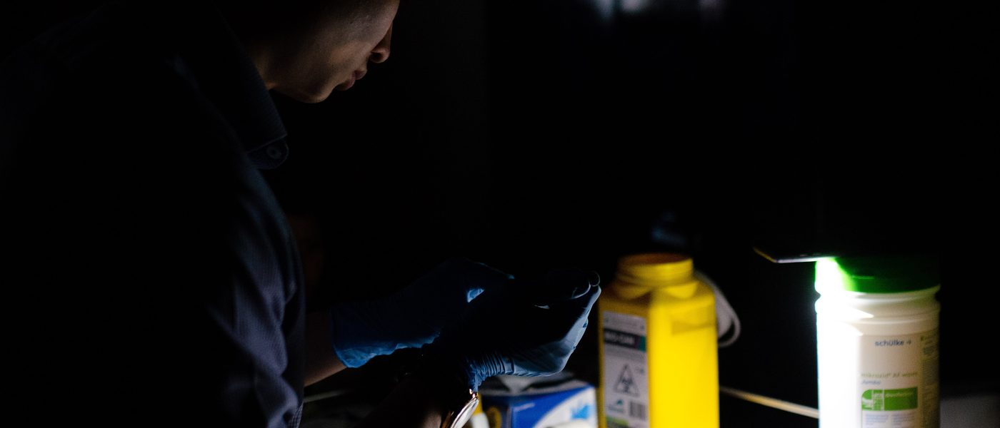

The specialty
A specialty with no clinic list and no discharge summary. What the work involves, what you would learn, and where it leads.
How is it different from clinical practice?
The unit of decision moves from the patient to the population, and everything downstream of it changes too.
A clinician decides what to do about the person in the room. A preventive medicine physician decides what to do about everyone who has not come in yet, including the people who never will, because the decision worked.
That single shift moves five things at once: what you are treating, how long you wait to find out whether you were right, where you sit while you wait, what counts as having done the job, and who has the standing to overrule you.
- Unit of care
- A defined population with a denominator — a workforce, a birth cohort, everyone who buys a bottled drink. The individual case still matters, but as evidence rather than as the unit of decision.
- Timescale
- Years to decades. A change made to an immunisation schedule shows up in notification data long after the officer who argued for it has moved to another posting.
- Where you work
- Eight organisations: ministries, a statutory board, a uniformed service and all three healthcare clusters. The Specialists Accreditation Board describes posting sites as ranging from government ministries and agencies through the public healthcare sector. How much of the five years is spent in clinical settings varies by posting; the FAQ gives the usual range.
- What success looks like
- A rate that falls. An outbreak that stays small. An exposure limit nobody breaches. Success in this specialty is an absence, and absences are rarely thanked.
- Who you answer to
- A committee, a director, a permanent secretary, a regulator, and eventually the public record. Not one patient and one family.
This contrast is the programme's own characterisation of the specialty, written for prospective applicants. It is not a formal definition of the discipline.
What would I do?
Four Singapore public health instruments, and the work behind each of them.

An instrument is a rule, a schedule, a limit or a grade. Building one runs from data, through a threshold that has to survive consultation and legal drafting, to an evaluation design agreed before the rule takes effect. The domains named beneath each example are the ones that work draws on.
Nutri-Grade, from 30 December 2022
Beverages sold in Singapore are graded A to D on sugar and saturated fat content. Only C and D carry the mark; D may not be advertised. The medicine in it is the threshold: where the line between grades sits decides whether the measure changes what people drink or merely annoys them. It has been extended twice since — to freshly prepared beverages from 30 December 2023, and, announced in April 2025, to twenty-three sub-categories of salt, sauces, seasonings, instant noodles and cooking oil from the middle of 2027. Draws on Counting Numbers (Epidemiology and Quantitative Methods), Doing Things Right (Health Policy, Law and Ethics) and Making Things Happen (Evaluation Sciences).
National childhood immunisation schedule
The schedule covers vaccination against fourteen diseases, of which only two — measles and diphtheria — are legally compulsory, under the Infectious Diseases Act. The gap between fourteen and two is the point: almost all of the coverage is achieved by making the right thing easy rather than by making it mandatory. Revising the schedule means weighing new evidence against the coverage already achieved, and against the cost of changing a system parents, polyclinics and general practitioners already follow without thinking. Draws on Whole and Sum of Parts (Health Systems), Counting Numbers (Epidemiology and Quantitative Methods) and Beyond Borders (Global and International Health).
Permissible noise exposure limits
A number written into the Schedule of the Workplace Safety and Health (Noise) Regulations, deciding how long a worker may be exposed at a given sound level and what the employer must do past that point — with a hard ceiling at a peak of 140 decibels. It has to be defensible as science, enforceable by an inspector standing on a factory floor, and survivable by the industry it binds. The enforcement design matters as much as the number: an employer must submit a noise monitoring report to the Ministry of Manpower once ten or more people are likely to be exposed above the limit. Draws on Health at Work (Occupational and Environmental Health), Counting Numbers (Epidemiology and Quantitative Methods) and Doing Things Right (Health Policy, Law and Ethics).
Food hygiene grading, and its replacement
For years a letter grade displayed at the stall turned an inspection record into something a customer could act on in two seconds. On 19 January 2026 the Singapore Food Agency replaced that A-to-D scheme with the Safety Assurance for Food Establishment framework, which grades on food safety track record and on whether a management system is actually in place, rather than on a single annual snapshot. The replacement is the instructive part: an instrument is not finished when it ships, and somebody had to evaluate the old scheme well enough to justify retiring it. Draws on Telling Stories (Social Science and Qualitative Methods), Making Things Happen (Evaluation Sciences) and Whole and Sum of Parts (Health Systems).
Nutri-Grade from the Ministry of Health and the Health Promotion Board, which gazetted it jointly; the immunisation schedule from the Communicable Diseases Agency; noise limits from the Ministry of Manpower; food hygiene grading from the Singapore Food Agency. All four are real Singapore instruments, cited as examples of what the specialty produces. They are not claimed as projects of this programme or of its residents. The photograph shows vector work and does not illustrate any of the four instruments; its date and place are still to be confirmed.
What would I learn?
Eight domains carry the curriculum, each named with the discipline it belongs to.
- Whole and Sum of PartsHealth Systems
- Making Things HappenEvaluation Sciences
- Using Technology and DataDigital Informatics
- Beyond BordersGlobal and International Health
- Doing Things RightHealth Policy, Law and Ethics
- Counting NumbersEpidemiology and Quantitative Methods
- Telling StoriesSocial Science and Qualitative Methods
- Health at WorkOccupational and Environmental Health
The eight domains are methods. They are applied across eight topic areas, which is where the subject matter lives.
- Infectious Disease
- Ageing and Palliative Care
- Chronic Disease
- Mental Health
- Food and Nutrition
- Maternal and Child Health
- Primary and Community Care
- Genomics and Precision Medicine
Eight domains and eight topic areas as set out in the programme brochure. The Master of Public Health at NUS Saw Swee Hock School of Public Health is taken during junior residency and is fully sponsored; Occupational Health is one of the available specialisations.
Where does it lead?
Two exit pathways, and a set of employers you will already have worked inside before you finish.
The programme has two exits: specialist registration in Public Health, or specialist registration in Occupational Medicine. Those are the names that appear on the Singapore Medical Council's register — “Preventive Medicine” is the name of the residency, not of the specialty you end up registered in. Because the five years are spent across eight organisations, most residents reach R5 having already worked alongside the people who decide their next post. Of 38 graduates since 2011, 36 have been traced to a current post.
The Specialists Accreditation Board also advises that, where possible, the later of the two senior residency sites should be with a prospective future employer. The last posting is meant to be a job interview conducted over six months.
Two exit pathways as published by NUHS. The registered specialty names are as listed by the Specialists Accreditation Board and the Singapore Medical Council, neither of which registers a specialty called Preventive Medicine. Graduate tracing figures are from the Programme Office alumni exercise, last updated August 2026.
The programme
Three years of junior residency with a sponsored Master of Public Health inside them. Two years of senior residency, an examination, and one piece of work with your name first on it.
At a glance
The eight facts most applicants want first.
- Duration
- Sixty months, full time. Five years from entry to the exit assessment.
- Junior residency
- Years 1 to 3.
- Senior residency
- Years 4 to 5.
- Master of Public Health
- Compulsory, and one of three gates into senior residency. Read at the NUS Saw Swee Hock School of Public Health or an equivalent overseas school approved by the Residency Advisory Committee. It may be taken before the residency, part-time during it, or full-time with a break of service. The programme brochure states it is sponsored in full.
- Exit pathways
- Two. Public Health, or Occupational Medicine. These are the specialty names the Singapore Medical Council registers; Preventive Medicine is the name of the residency, not of the register entry.
- Participating organisations
- Eight: Ministry of Health; Health Promotion Board; Ministry of Manpower; Ministry of Home Affairs; Singapore Armed Forces; National Healthcare Group; SingHealth; and institutions within the National University Health System.
- Accreditation
- Accredited locally by the Joint Committee on Specialist Training under the Accreditation of Postgraduate Medical Education Singapore framework. The transition of all Singapore postgraduate training programmes onto that framework completed in July 2026, replacing accreditation by the Accreditation Council for Graduate Medical Education – International.
- Less than full time
- Not allowed in Preventive Medicine. Exceptions may be granted by the Specialists Accreditation Board case by case.
Duration, structure, gates and accreditation from the Specialists Accreditation Board and its Preventive Medicine Specialty Training Requirements dated 21 November 2025. Participating organisations as named on the NUHS programme page.

The five years
Three gates in junior residency, four requirements at exit.
Junior residency, Years 1 to 3
- Length
- Thirty-six months.
- What happens
- Rotations across the participating organisations, alongside the Master of Public Health. Entry is from Postgraduate Year 2 onwards. The Specialists Accreditation Board describes the junior years as basic practicum experience in health policy and administration, disease control and epidemiology, health promotion, occupational and environmental health, and clinical preventive medicine.
- Compulsory postings
- Two, both with a minimum length: Infectious Diseases Outbreak Management, at least three months; and a Public Health agency, at least three months. The first year covers communicable disease outbreak management and public health agency work, with exposure to epidemiological surveillance. Later years move to public health operational units, then to policy and programmatic work at the Ministry of Health and the Ministry of Manpower.
- Primary healthcare
- Residents may spend up to fifty-two half-day attachments at one or more primary healthcare organisations. These are mandatory if you have no prior primary healthcare exposure, and optional if you do. The programme arranges them.
- The portfolio
- Started in R1 and maintained throughout the residency. It is reviewed by the Competency Committee at least once each rotation, by the Progression Review in R3 to decide eligibility for senior residency, and by the Examination Committee in R5 to decide eligibility to sit the exit examination. It is also the object of the exit viva.
- What you must pass
- Three gates, all required to progress to senior residency: the Master of Public Health; the Progression Preventive Medicine Competency Committee Review; and the Primary Healthcare Systems Project — a report of three thousand words, proposed on one page and approved by the Competency Committee before you begin it, submittable in any year of junior residency.
Senior residency, Years 4 to 5
- Length
- Twenty-four months.
- What happens
- Rotations at two or more sites in different organisations, six months minimum at each. You cannot spend senior residency inside a single organisation. Where possible the main or later of the two sites is with a prospective future employer. The two years are a personalised programme designed with the Programme Director, the faculty and the receiving organisations.
- Pathway
- You exit through one of two pathways: Public Health, or Occupational Medicine. The Occupational Medicine track differentiates at R4 and R5; its competencies are not assessed at the R3 progression review.
- The examination
- Sat in two parts across the two years. Part 1, in R4: sixty case-based short-answer questions, and a written paper. Part 2, in R5: a prepared presentation on translational public health and occupational medicine, and a portfolio-based viva.
- Competency standard
- Residents must reach level 4 on the specified Entrustable Professional Activities by the end of training — nine in Public Health, common to both pathways in junior residency, and eleven in Occupational Medicine.
- Accreditation
- Accredited locally by the Joint Committee on Specialist Training under the Accreditation of Postgraduate Medical Education Singapore framework, established in July 2023. The transition of all Singapore postgraduate medical training programmes onto it completed in July 2026. Exit certification is issued by the Joint Committee on Specialist Training. To practise as a specialist you must then be accredited by the Specialists Accreditation Board and registered by the Singapore Medical Council under Public Health or Occupational Medicine.
What you can specialise in
The areas rotations are built around, and the point at which the two exit pathways separate.
The only formal division stated by the Specialists Accreditation Board is that the Occupational Medicine track differentiates at R4 and R5. Before that point, both pathways are assessed against the same nine Public Health competencies. Everything else is arranged individually: the Board describes senior residency as a personalised two-year programme designed with the Programme Director, the faculty and the receiving organisations, taking account of the resident's interests and career aspirations.
The programme brochure names the areas junior rotations are focused around, and they are the practical answer to what a resident can build towards:
- Occupational Medicine
- Health Promotion
- Population Health
- Communicable Disease
- Healthcare Management
- Health Economics and Outcomes Research
- Health Policy
Pathway differentiation and the personalised senior programme from the Specialists Accreditation Board's Preventive Medicine Specialty Training Requirements. The seven areas above are as listed in the current programme brochure, which describes them as areas of interest for rotations rather than as named tracks.
Research and scholarly activity
You cannot exit this residency without producing a piece of work with your name first on it.
The Specialty Training Requirements state it flatly: residents must publish a first-author paper in a peer-reviewed journal, on a public health or occupational medicine topic. The NUHS brochure says the same. There is no alternative route to it, so plan for publication from R1 rather than from R4.
Singapore's public health instruments are the genre this work points at: Nutri-Grade beverage labelling; the national childhood immunisation schedule; permissible noise exposure limits under the Workplace Safety and Health (Noise) Regulations; the Singapore Food Agency's food establishment grading. None of those is resident work. They are what the output looks like at national scale.
- The requirement
- A first-author paper in a peer-reviewed journal, on a public health or occupational medicine topic. Work published before joining the residency may be considered case by case.
- Also required
- A primary healthcare project, completed by the end of residency. In junior residency this takes the form of the three-thousand-word Primary Healthcare Systems Project, which is one of the three gates into senior residency.
- When it must be done
- The paper must be submitted to a journal by the time you apply for the exit examination. You may sit the examination before it is accepted, with two years from the examination date for acceptance or publication. Miss that, and you re-sit the exit examination once the paper has been accepted.
- Presentations
- All residents are expected to take part in scholarly presentations at local or overseas conferences, and senior residents are expected to teach nurses, undergraduates and medical officers and to present posters and free papers at meetings.
- Supervision
- Half a day a week is set aside for personal study and research or scholarly activity. Each resident is assigned a research supervisor from the core faculty, and first-time authors are supported through the Saw Swee Hock School of Public Health's research methods and scientific writing provision.
Requirements from the Specialists Accreditation Board's Preventive Medicine Specialty Training Requirements dated 21 November 2025.
See the participating organisations, one by one
Read the admissions requirements and the selection criteria
Applications for the July 2027 intake
Applications are made through the MOH Holdings eResidency portal. Registering to be interviewed by NUHS as Sponsoring Institution is a separate step, and it stays open eight days longer than the portal does — but the portal cannot be reopened or extended, so the portal is the deadline that ends your cycle.
eResidency portal: 1 to 24 September 2026.
Interview registration with NUHS: 1 September to 2 October 2026.
Apply for the July 2027 intake eResidency portal opens 1 September 2026
Not ready to apply? Write to A/Prof Jason Yap, Programme Director, at jasonyap@nus.edu.sg.